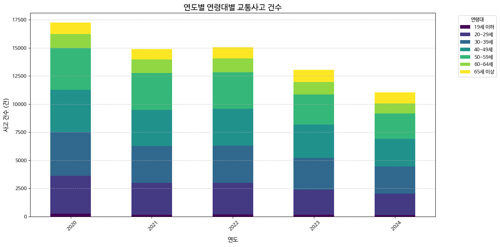

2020년 - 2024년 가해운전자 연령대별 발생 통계
Total Accidents (5Y)
Yearly Average
Peak Age Group
Reduction Rate
2020년부터 2024년까지의 총 사고 건수 변화
전체 기간 누적 분포
Total
71.3K

* 통계청 및 경찰청 교통사고 분석시스템(TASS) 자료를 근거로 한 사용자의 업로드 이미지입니다.
| Year | Total | 20-29Y | 30-39Y | 40-49Y | 50-59Y | 65Y+ |
|---|---|---|---|---|---|---|
| 2020 | 17,247 | 3,369 | 3,879 | 3,772 | 3,704 | 1,006 |
| 2021 | 14,894 | 2,828 | 3,272 | 3,235 | 3,263 | 900 |
| 2022 | 15,059 | 2,789 | 3,331 | 3,275 | 3,260 | 1,011 |
| 2023 | 13,037 | 2,410 | 2,850 | 2,790 | 2,810 | 850 |
| 2024 | 11,045 | 2,050 | 2,410 | 2,350 | 2,380 | 710 |